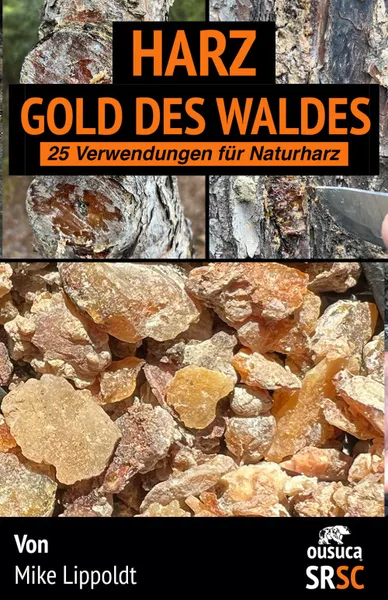
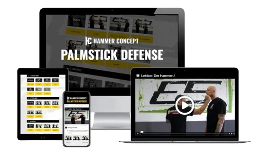
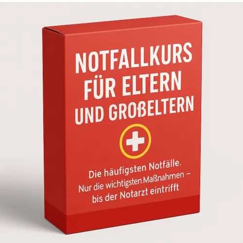
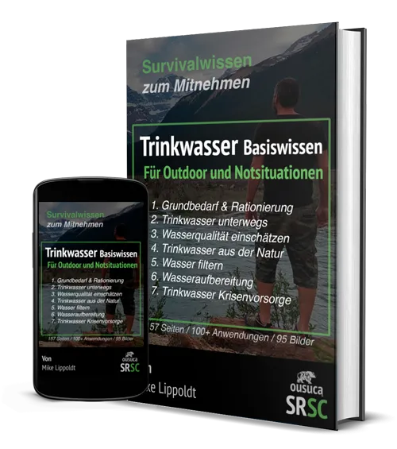
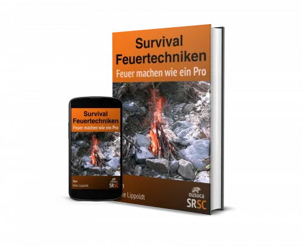
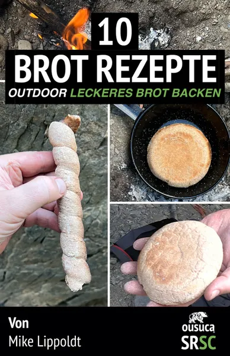
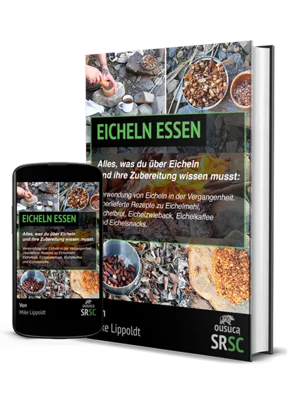

eBook Harz: Gold des Waldes
Produktprofil · Marktplatz-Daten 2026-10-14 · Verkaufsseiten-Recherche 2026-10-14 · Kategorien: Survival
- eBook Harz: Gold des Waldes ist ein/e E-Book in Survival, vertrieben über den Digistore24-Marktplatz von Anbieter ypsilon, gelistet seit 2022-04-19.
- Listenpreis $18.82 (single payment) — Checkout, Auslieferung und Rückerstattungen laufen über Digistore24 selbst, nicht über den Anbieter.
- Käuferschutz: keine standardisierte Garantie-Formulierung gefunden — Rückerstattungsbedingungen vor der Zahlung auf der offiziellen Seite prüfen.
Interesse an eBook Harz: Gold des Waldes? Aktueller Preis, Boni und Garantiebedingungen finden Sie auf der offiziellen Seite des Anbieters:
Offizielle Verkaufsseite ansehen
Affiliate-Link (Werbung) — wir verdienen ggf. eine Provision, ohne Mehrkosten für Sie.

Marktplatz-Daten
| Produkttyp | E-Book |
|---|---|
| Preis | $18.82 (Single payment) |
| Garantie/Rückgabe | Laut Verkaufsseite des Anbieters — vor dem Kauf auf der offiziellen Seite prüfen |
| Anbieter | ypsilon (gelistet seit 2022-04-19) |
Marktplatz-Beschreibung des Anbieters
Mit dem ousuca® Partnerprogramm zum Self Reliance Survival Camp (SRSC) kannst du ein passives Einkommen aufbauen. Bewerbe das eBook Harz: Gold des Waldes (25 Verwendungen für Naturtharz des SRSC-Survival-Onlineprogramms. Vorteile für Nutzer: Naturliebhaber, Bushcrafter, Wildnispädagogen lernen Baumharz von all seinen faszinierenden Seiten kennen. 25 verschiedenen Anwendungsmöglichkeiten von Baumharz überraschen auch erfahrene Wildnisfreunde. Deine Vorteile als Affiliate: 50 % für jeden Verkauf ousuca® SRSC Branding und somit hoher Wiedererkennungswert Upsells (geplant) und weitere Verdienstmöglichkeiten mit ousuca® durch Abos zum SRSC möglich Werde Partner von ousuca® und vom ersten umfangreichen Online-Survival-Kurs und den einzeln angeboteten Produkten wie die SRSC Einzelkurse oder SRSC eBooks und Anleitungen und baue dir ein passives Einkommen auf.
Von der Verkaufsseite des Anbieters
Seitentitel: Harz Gold des Waldes / eBook Naturharz Verwendungen
Meta-Beschreibung: In diesem eBook lernst du 25 Möglichkeiten für die Verwendung von Harz kennen. Du lernst, Harze zu unterscheiden und einzuordnen. / ousuca®
Hauptüberschrift
Harz: Gold des Waldes (eBook)
Abschnitts-Überschriften
- Diese PDF als Broschüre verwenden
- Du bist noch unentschlossen?
Einstiegstext
Im eBook Harz: Gold des Waldes lernst du nicht nur 25 Möglichkeiten für die Verwendung von Harz kennen. Du lernst, Harze zu unterscheiden, einzuordnen und sie für dich im Alltag nutzbar zu machen.
Weitere Details: Preis: 18 € (MwSt inkl.) / 35 Seiten / eBook lesbar auf verschiedenen elektronischen Devices oder ausdruckbar als Broschüre / Zahlungsabwicklung über Digistore24 / Keine Widerrufsfrist
So wie alle eBooks und PDFs die bereits für dich bei ousuca.com zur Verfügung stehen, habe ich auch dieses eBook Harz: Gold des Waldes so für dich gestaltet, dass du es einfach als Broschüre ausdrucken kannst.
Die PDF dieses Ratgebers zur Verwendung von Harz hat 35 Seiten. Du kannst sie dir herunterladen und ausdrucken oder einfach auf dem Smartphone, dem Laptop oder deinem Mac lesen.
Recherche-Methode: rohes HTML · 671 Wörter · Qualität: rich · recherchiert am 2026-10-14. Vollständige Recherche-Datei (MD) ↗
Wie Produkte dieser Art geliefert werden
Allgemeiner Hinweis zu diesem Produkttyp (keine anbieterspezifische Anleitung): E-Books auf Digistore24 werden als digitaler Download geliefert (meist PDF/EPUB): direkt nach dem Checkout erhalten Sie einen Downloadlink oder Mitgliederzugang und können auf jedem Gerät lesen. Für die genaue Anwendung von eBook Harz: Gold des Waldes sind die offizielle Verkaufsseite und die enthaltenen Materialien maßgeblich.
Gut zu wissen
- Keine Garantie-Formulierung in unserer Recherche gefunden — bestätigen Sie das Rückgabefenster auf der offiziellen Seite, bevor Sie kaufen.
Was ist eBook Harz: Gold des Waldes?
eBook Harz: Gold des Waldes ist ein/e e-book in der Kategorie Survival des Digistore24-Marktplatzes, veröffentlicht von Anbieter ypsilon und im Verkauf seit 2022-04-19. Der Anbieter beschreibt es so: "Mit dem ousuca® Partnerprogramm zum Self Reliance Survival Camp (SRSC) kannst du ein passives Einkommen aufbauen. Bewerbe das eBook Harz: Gold des Waldes (25 Verwendungen für Naturtharz des SRSC-Survival-Onlineprogramms. Vorteile für Nutzer: Naturliebhaber, Bu" (Marktplatz-Beschreibung des Anbieters, leicht gekürzt).
eBook Harz: Gold des Waldes Preis: was Sie zahlen
Der Marktplatz listet eBook Harz: Gold des Waldes zum $18.82 Preis (single payment). Digistore24 fügt im Checkout die gesetzliche Steuer Ihres Landes hinzu — dort sehen Sie den Endbetrag vor der Zahlung. Eine separate Plattformgebühr gibt es nicht; Anbieter können eigene Upsells nach dem Checkout anbieten.
eBook Harz: Gold des Waldes Rückerstattung und Geld-zurück-Garantie
Wir haben keine standardisierte Garantie-Formulierung auf der Verkaufsseite gefunden. Rückerstattungen für Digistore24-Käufe laufen über die Plattform: Antrag über den Support-Link in Ihrer Bestell-E-Mail, innerhalb des Garantiezeitfensters, das im Checkout angezeigt wird. Praktischer Rat: Entscheiden Sie innerhalb des Fensters — wenn das Produkt unter den Erwartungen bleibt, erstatten lassen statt irren lassen.
Mechanik im Detail: So funktionieren Digistore24-Rückerstattungen.
Für wen ist eBook Harz: Gold des Waldes geeignet?
Basierend auf der Survival-Einordnung und der single payment-Abrechnung richtet sich eBook Harz: Gold des Waldes an Käufer, die survival-Lösungen suchen zum Einstiegspreis. Der ehrliche Test ist nicht die Kategorie, sondern Ihre eigene Situation: Werden Sie es realistisch innerhalb des Garantiefensters nutzen? Wenn ja, ist der Preis eine Investition; wenn nein, ist er Ballast — unabhängig von der Qualität.
Ist eBook Harz: Gold des Waldes seriös? Was Sie vor dem Kauf prüfen
Wir bewerten keine Seriosität — das kann niemand, ohne das Produkt zu nutzen. Prüfbare Punkte, alle auf dieser Seite: die Marktplatz-Historie des Anbieters (im Verkauf seit 2022-04-19), die wörtlichen Verkaufsseiten-Auszüge unten (gekennzeichnet als Anbieteraussagen — deren Werbung, nicht unsere Empfehlung), die Garantiebedingungen im Checkout und die Auslieferungsart. Vorsichtsignale bei jedem Angebot: Countdown-Dringlichkeit gepaart mit vagen Rückerstattungsbedingungen, Testimonials ohne Datum und Anbieterseiten, die den Preis bis zum Checkout verstecken.
Wie kommen Sie nach dem Kauf an eBook Harz: Gold des Waldes?
Der Checkout läuft über Digistore24. Nach der Zahlung: E-Books auf Digistore24 werden als digitaler Download geliefert (meist PDF/EPUB): direkt nach dem Checkout erhalten Sie einen Downloadlink oder Mitgliederzugang und können auf jedem Gerät lesen. Bewahren Sie die Bestell-E-Mail auf — sie ist Ihr Schlüssel zum/d zur e-book, zu Rückerstattungsanträgen und zum Digistore24-Käufersupport.
eBook Harz: Gold des Waldes Erfahrungen: so recherchieren Sie richtig
Die meisten „Erfahrungsberichte" zu Marktplatz-Produkten sind Affiliate-Inhalte — einschließlich Seiten wie dieser, die an Käufen mitverdienen. Behandeln Sie jeden Bericht (auch unseren) als Ausgangspunkt und prüfen Sie gegen Primärquellen: die Verkaufsseite des Anbieters, die Digistore24-Rückerstattungsrichtlinie und — für survival — unabhängige Communities außerhalb des Affiliate-Ökosystems. Auf dieser Seite sind die Verkaufsseiten-Auszüge unten wörtlich zitiert, damit Sie die Aussagen des Anbieters bewerten können, ohne wegzuklicken.
Wie Sie eBook Harz: Gold des Waldes sicher kaufen
- Öffnen Sie die offizielle Verkaufsseite und lesen Sie das vollständige Angebot.
- Bestätigen Sie Endpreis und Garantiezeitfenster auf der Digistore24-Kassenseite — sie ist bindend, kein Vergleichsportal.
- Zahlen Sie innerhalb des Digistore24-Checkouts (niemals per Überweisung oder Off-Platform-Links).
- Speichern Sie die Bestellbestätigung; notieren Sie die Rückerstattungsfrist im Kalender.
- Prüfen Sie zügig. Der Digistore24-Käufersupport hilft, wenn der Anbieter nicht reagiert.
Vollständiges Recherche-Archiv für dieses Produkt (Markdown: kompletter Marktplatz-Datensatz + wörtliche Verkaufsseiten-Auszüge): eBook Harz: Gold des Waldes — Datenarchiv (.md).
- Listenpreis & Abrechnung — Quelle: offizielle Digistore24-Marktplatz-API, Stand 2026-10-14. Maßgeblich für den aktuellen Preis ist immer die Kassenseite.
- Verkaufsseiten-Zitate — Quelle: https://ousuca.com/buecher/harz-ebook/, abgerufen 2026-10-14 (Methode: rohes HTML). Verify: offizielle Seite öffnen.
- Garantie / Rückgabe — vom Anbieter festgelegt; vor dem Kauf auf der Verkaufsseite bestätigen.
- Nicht von uns geprüft: Produktqualität, Ergebnisse, Testimonials — kein Praxistest für dieses Listing durchgeführt.
Häufige Fragen zu eBook Harz: Gold des Waldes
Antworten aus dem Marktplatz-Snapshot (2026-10-14) und der Verkaufsseiten-Recherche (2026-10-14); Anbieteraussagen sind inline gekennzeichnet.
Was ist eBook Harz: Gold des Waldes?
eBook Harz: Gold des Waldes ist ein Angebot des Typs „E-Book" im Digistore24-Marktplatz, Anbieter: ypsilon, gelistet seit 2022-04-19. Eingepflegt unter Survival. Digistore24 wickelt Checkout, Lieferung und Rückgaben ab.
Wie viel kostet eBook Harz: Gold des Waldes?
Der Digistore24-Marktplatz listet es für $18.82 (single payment). Preise legt der Anbieter fest und können sich ändern — der Marktplatz-Eintrag oben zeigt den Schnappschuss; die offizielle Verkaufsseite zeigt den aktuellen Preis.
Gibt es eine Geld-zurück-Garantie für eBook Harz: Gold des Waldes?
Unsere Verkaufsseiten-Recherche hat keine explizite Garantie-Formulierung gefunden. Viele Digistore24-Produkte bieten 60 Tage Geld-zurück, aber das legt jeder Anbieter selbst fest — bestätigen Sie es auf der offiziellen Verkaufsseite, bevor Sie kaufen.
Ist eBook Harz: Gold des Waldes seriös?
Wir bewerten keine Seriosität — wir veröffentlichen überprüfbare Zahlen: Anbieter ypsilon (gelistet seit 2022-04-19), mit der vollständigen Verkaufsseiten-Recherche archiviert auf dieser Seite (Anbieteraussagen als solche gekennzeichnet). Lesen Sie unsere 6-Punkte-Bewertungsmethode und entscheiden Sie anhand der Zahlen — oder diskutieren Sie eBook Harz: Gold des Waldes auf GitHub.
Wo kann ich eBook Harz: Gold des Waldes sicher kaufen?
Nur über die offizielle Verkaufsseite, die auf dieser Seite verlinkt ist (Checkout und Rückgaben laufen über Digistore24). Prüfen Sie dort Preis und Garantie vor der Bestellung. Der Link ist ein Affiliate-Link — der Kauf unterstützt diese Website ohne Mehrkosten für Sie.
Wie erhalte ich eBook Harz: Gold des Waldes nach der Zahlung?
Der Checkout läuft über Digistore24: Nach der Zahlung erhalten Sie Ihren Zugang oder Download per E-Mail und in Ihrem Digistore24-Kundenkonto. Lieferdetails für diesen Produkttyp: E-Books auf Digistore24 werden als digitaler Download geliefert (meist PDF/EPUB): direkt nach dem Checkout erhalten Sie einen Downloadlink oder Mitgliederzugang und können auf jedem Gerät lesen. Bei Problemen kann der Digistore24-Käufersupport Ihre Bestellung wiederherstellen.
Alle 50 Käuferfragen zu Survival — das komplette Kategorie-FAQ.
eBook Harz: Gold des Waldes auf Reddit diskutieren
In Community-Threads vergleichen echte Käufer Erfahrungen. Wir verlinken Communities, keine einzelnen Posts — Threads verschwinden, Subreddits bleiben:
- Reddit-Suche nach „eBook Harz: Gold des Waldes" — Live-Ergebnisse, von uns nicht beeinflusst.
- Top-„Erfahrungs"-Treffer dieses Jahr — selbst nach Aktualität filtern.
Passendes auf Amazon.de
Physische Produkte und Zubehör, die häufig zusammen mit eBook Harz: Gold des Waldes gekauft werden:
- Survival auf Amazon.de — Top-Ergebnisse, Amazon-Ranking.
- Bestseller: Survival — live Liste von Amazon, von uns nicht kuratiert.
Werbung: Als Amazon-Partner verdient DigistorePicks DE an qualifizierten Käufen (Partner-tag adminstorede-21). Amazon setzt eigene Preise und Provisionen (niedrige einstellige Prozente — weit unter den 30–75% der Digistore24-Anbieter). Amazon ist ein Convenience-Angebot für Sachprodukte, kein Ersatz für das digitale Produkt oben.
Ähnliche Angebote in Survival
Brandaktuell + hohe Conversion! DAS Programm für Schutz und Sicherheit des eigenen Vermögens mit dem Geldwert-Protektor Premium Deine Vorteile als Affiliate: ho
⚡ Verdiene bis zu 100€ pro Verkauf!! ⚡ Wir zahlen 75% auf alle Front-End Verkäufe und 50% auf Back-End Sales. Unser hochwertiges Front-End-Produkt kostet 49€+ m

Die EINFACHE Selbstverteidigung mit Palmstick / Kubotan / Tactical Pen und Alltagsgegenständen (EDC). In diesem Onlinekurs lernst Du Schritt-für-Schritt die ein

Dieser Kinder-Notfall-Kurs ist auf seine Art einzigartig. Er bietet in 10+3 Videolektionen kurze knackige lebenswichtige Informationen bei einem Notfall eines K
Weitere Angebote von ypsilon

Mit dem ousuca® Partnerprogramm zum Self Reliance Survival Camp (SRSC) kannst du ein passives Einkommen aufbauen. Bewerbe das eBook Trinkwasser Basiswissen für

Mit dem ousuca® Partnerprogramm zum Self Reliance Survival Camp (SRSC) kannst du ein passives Einkommen aufbauen. Bewerbe das eBook Survival Feuertechniken / Fe

Mit dem ousuca® Partnerprogramm zum Self Reliance Survival Camp (SRSC) kannst du ein passives Einkommen aufbauen. Bewerbe das eBook 10 Brot Rezepte / Outdoor le

Mit dem ousuca® Partnerprogramm zum Self Reliance Survival Camp (SRSC) kannst du ein passives Einkommen aufbauen. Bewerbe das eBook Eicheln essen: Traditionelle
Ähnliche Preislage in Survival

Essbare Wildpflanzen – 200 Arten bestimmen und verwenden Entdecke die grüne Kraft der Natur! Dieses E-Book zeigt dir, wie du 200 heimische Wildpflanzen sicher b
Mit dem ousuca® Partnerprogramm zum Self Reliance Survival Camp (SRSC) kannst du ein passives Einkommen aufbauen. Bewerbe das eBook Trinkwasser Basiswissen für
Mit dem ousuca® Partnerprogramm zum Self Reliance Survival Camp (SRSC) kannst du ein passives Einkommen aufbauen. Bewerbe das eBook Survival Feuertechniken / Fe
Ähnliche Suchanfragen
Wo Sie es sich ansehen können
Wo Sie es sich ansehen können
Aktuelle Preise, Garantie und Boni finden Sie auf der offiziellen Verkaufsseite:
Offizielle Verkaufsseite ansehen
Das ist ein Affiliate-Link (Werbung) — kaufen Sie darüber, verdienen wir ggf. eine Provision, ohne Mehrkosten für Sie.
Quellen & weiterführende Informationen
- Offizielle Verkaufsseite (aktueller Preis, Garantie, Boni): ousuca.com/buecher/harz-ebook/ (Affiliate-Link)
- Öffentliche Digistore24-Produktseite: checkout-ds24.com/product/439453
- Vollständige Recherche-Datei (Markdown, versioniert): content/products/39832-ebook-harz-gold-des-waldes.md
- Affiliate-Supportseite des Anbieters: ousuca.com/partnerprogramm/
- Marktplatz-Kategorie: Survival
Wie wir Produkte wie eBook Harz: Gold des Waldes bewerten
Sechs Prüfungen, ausschließlich mit offiziellen Marktplatz-Zahlen. Die vollständige Bewertungsmethode lesen · unsere Recherche-Standards & Kennzeichnung.
Fragen oder eigene Erfahrungen mit eBook Harz: Gold des Waldes?
Praxis-Tests veröffentlichen wir erst, nachdem wir ein Produkt selbst gekauft haben — aber Ihre Erfahrung hilft anderen Lesern: Diskussion zu eBook Harz: Gold des Waldes auf GitHub starten/verfolgen. Falsche Zahl gefunden? Korrektur melden — jede Seite zeigt ihre Datenstände, Korrekturen gelten für die ganze Website.